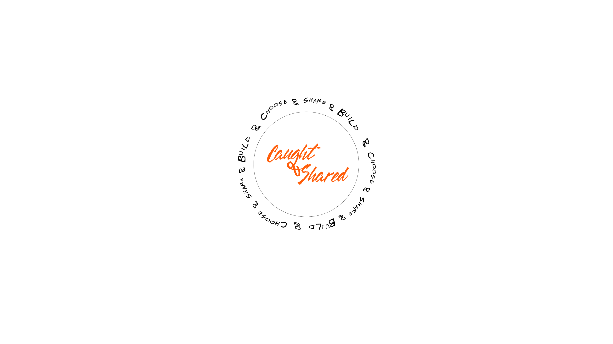

A framework for conscious control in recommender systems.
Choose who influences your recommendations.
Share your taste.
Build recommendation systems together.

Modern recommender systems learn from our clicks, views and interactions. But what if recommendations could also learn from people we consciously trust?
Caught & Shared explores a simple idea:
recommendation systems should not rely only on behavioral signals. Users should also be able to choose whose perspective influences their digital environment.
Concept, motivation, architecture and future directions of Conscious Recommender Systems.
Open PDF →Prototype code and technical exploration of mentor-driven recommendation systems.
Explore →“Recommendation systems have become too important for users to remain passive observers.”
— Caught & Shared